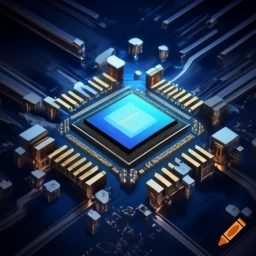

Introduction to Processing Devices:
Processing devices are hardware components responsible for executing instructions and processing data within a computer system. These devices handle tasks such as computation, data manipulation, and executing software applications.

Some Popular Processing Devices:
- Central Processing Unit (CPU): The primary component that performs most of the processing inside a computer, executing instructions from programs and performing calculations.
- Graphics Processing Unit (GPU): Specialized for handling graphics-related tasks and computations, often used in gaming, video rendering, and complex calculations.
- Motherboard: The main circuit board that houses the CPU, memory, and other essential components, allowing them to communicate with each other.
- Digital Signal Processor (DSP): Optimized for handling real-time signal processing tasks, such as audio processing, image processing, and telecommunications.
- Embedded Systems: Specialized computing systems integrated into other devices, such as appliances and automotive systems, designed for specific processing tasks.
Conclusion:
Processing devices are fundamental to computing systems, enabling the execution of tasks, manipulation of data, and running of software applications. Advancements in processing technology continue to drive innovations in computing power and efficiency.